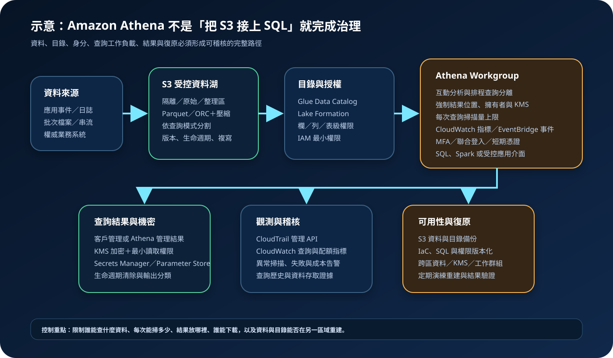

Amazon Athena：無伺服器查詢、資料湖治理與成本控制
Amazon Athena 是無伺服器的互動式分析服務，可使用 SQL 直接查詢 Amazon S3 中的結構化、半結構化與非結構化資料，也能執行 Apache Spark 工作。服務免除叢集建置與容量維護，但不會代替資料品質、分割策略、目錄治理、查詢授權、結果保護、成本邊界或災難復原設計。
作者：Dr. William｜查閱與發布：2026-09-29
服務定位
Amazon Athena 適合直接探索 S3 資料、查詢應用與安全日誌、驗證資料管線、執行臨時分析，以及為報表或受控應用提供 SQL 查詢。使用者定義資料表與目錄後即可查詢，不需要先將資料載入 Athena 專用儲存或維護常駐叢集。
Athena 的方便來自運算與儲存分離，而非治理消失。實際架構通常同時涉及 S3、AWS Glue Data Catalog、Lake Formation、IAM、KMS、CloudWatch、CloudTrail 與查詢結果位置。任何一層權限過寬、資料配置失衡或結果保存失控，都可能形成資料外洩、成本暴增或稽核缺口。
核心概念與適用邊界
查詢與資料元件
- SQL 與 Spark：Athena SQL 適合互動式查詢；Athena for Apache Spark 適合以 Python 與 Spark 執行分析。兩者工作模式與計費方式不同。
- S3 資料：Athena 直接讀取物件；資料格式、壓縮、檔案大小、分割與排序會決定掃描量、效能與成本。
- Glue Data Catalog：保存資料庫、資料表、欄位、分割與位置等中繼資料，讓查詢引擎知道如何解讀 S3 物件。
- 分割：依日期、區域、租戶或常用篩選條件切分資料，使查詢只讀取必要範圍；過度分割與大量小檔案也會增加負擔。
- 欄式格式：Parquet 與 ORC 可只讀取需要的欄位，搭配壓縮與分割可降低掃描量。
- CTAS／UNLOAD：可將查詢結果轉換或輸出到 S3；執行者因此需要受限的寫入路徑與資料外流控制。
工作負載與治理元件
- Workgroup：隔離團隊與應用查詢，控制存取、結果位置、加密、指標、掃描上限與成本標籤。
- 查詢結果：可採客戶管理 S3 結果位置，或在支援情況下採 Athena managed query results；兩者的權限、保留與功能限制不同。
- Lake Formation：可對資料庫、表、欄位與資料位置建立細緻授權，但 Athena、S3、Glue、KMS 與結果路徑仍可能需要額外 IAM 權限。
- 資料來源連接器：聯合查詢可讀取 S3 以外資料來源；連接器執行角色、網路、機密、來源負載與資料傳輸都需另行治理。
- 容量選項：一般 SQL 常依掃描資料量計費，也可評估 capacity reservations；Spark 依使用運算計費。
- 非資料倉儲替代：Athena 不負責長期維持低延遲、高併發、複雜交易或大量固定報表的專用資料倉儲服務等級。
適合與不適合的使用情境
適合
- 需要快速以 SQL 探索 S3 中的日誌、事件、營運資料或資料湖資料集。
- 查詢具有明確時間、區域、來源或租戶範圍，可透過分割與欄式格式限制掃描量。
- 工作負載間歇或難預測，希望避免維護常駐查詢叢集。
- 需要把互動分析、排程報表、安全調查與應用查詢分到不同 workgroup 管理。
- 團隊能管理資料契約、schema 演進、資料目錄、權限、結果保留、成本與復原。
不適合或不能單獨完成
- 需要高頻逐筆交易、資料列鎖定、低延遲寫入與完整 OLTP 交易語意。
- 需要大量使用者持續執行高併發、低延遲且結構固定的複雜報表，但未評估專用資料倉儲或快取層。
- 資料仍是大量未壓縮 CSV、小檔案與無分割物件，卻要求穩定低成本與快速查詢。
- 希望僅靠 SQL 隱藏原始 S3 bucket 的過寬存取；能直接讀取底層物件的身分可能繞過查詢層控制。
- 把 serverless 誤解為自動備份、零成本、零權限治理或跨區自動復原。
示意故事案例：跨通路事件分析
以下為示意案例，不代表特定企業或正式部署。 一家零售團隊將門市、網站與行動應用事件送入 S3。資料先進入隔離區，完成 schema 驗證、惡意內容處理、個資遮罩、去重與品質檢查，再轉成壓縮 Parquet，依事件日期與來源分割至整理區。Glue Data Catalog 保存表結構，Lake Formation 管理資料表與敏感欄位權限。
分析人員透過聯合登入、MFA 與短期憑證進入互動分析 workgroup；排程報表使用另一個服務角色與 workgroup。兩者都強制 KMS 加密、指定結果設定、預期 bucket owner 與掃描量上限。只有核准角色能讀取結果，CTAS 與 UNLOAD 僅能寫入指定 S3 prefix。CloudWatch 監控查詢、失敗、掃描量與配額，EventBridge 傳送查詢狀態，CloudTrail 保存管理 API 活動。S3 資料、目錄定義、IaC、SQL 與權限設定定期在另一區域演練重建。

建置與運作流程
- 定義查詢目標：記錄使用者、資料範圍、SQL 或 Spark、併發、延遲、掃描量、輸出、RPO／RTO 與月成本上限。
- 分類與分區資料：建立隔離、原始、整理與輸出區，指定資料擁有者、敏感等級、保存期限與刪除流程。
- 優化實體配置：將常用資料轉成 Parquet 或 ORC，採適當壓縮、檔案大小與常用篩選條件分割，避免過度分割與小檔案。
- 建立資料目錄：在 Glue Data Catalog 管理資料庫、表、欄位、分割與位置，對 schema 變更建立審查及相容性測試。
- 建立資料授權：使用 IAM 最小權限；需要細緻資料權限時配置 Lake Formation，明確測試資料表、欄位、S3 與 KMS 邊界。
- 分離 workgroup：將互動分析、排程報表、應用查詢、測試與高風險探索分開，限制誰能使用及管理設定。
- 保護查詢結果：選擇客戶管理或 Athena 管理結果，強制加密、保留、下載權限與清除程序；客戶管理 S3 時設定預期 bucket owner。
- 設定成本護欄：配置每次查詢掃描量限制、workgroup 告警、CloudWatch 儀表板、成本標籤與異常成本通知。
- 限制寫入與匯出：CTAS、INSERT、UNLOAD 與聯合查詢角色只允許指定目的地，禁止任意跨帳戶、跨區或公開輸出。
- 管理機密：連接器或應用需要的 credential 存於 Secrets Manager；一般設定存於 Parameter Store，不寫入 SQL、程式碼、URL 或日誌。
- 建立觀測與稽核：啟用 CloudWatch 查詢指標、EventBridge 事件與 CloudTrail；保存查詢、權限、目錄、KMS、S3 與 workgroup 變更證據。
- 測試失敗路徑：驗證查詢取消、資料格式錯誤、分割遺失、KMS 拒絕、結果無權讀取、S3 限流與配額接近時的處理。
- 演練復原：在另一區域重建 S3 資料、Glue 目錄、Lake Formation、IAM、KMS、workgroup、SQL 與應用連線。
成本、可用性與維運考量
Athena SQL 常見成本與查詢掃描的資料量直接相關；capacity reservations 與 Athena for Apache Spark 則有不同計費單位。S3 儲存、請求、資料傳輸、查詢結果、Glue Data Catalog、Lake Formation 周邊操作、KMS、CloudWatch、跨區複寫與連接器資源可能另行計費。失敗或取消查詢也可能已掃描資料或留下部分結果及未完成 multipart upload。
降低成本的主要方法不是減少使用者，而是減少不必要掃描：採欄式格式與壓縮、依實際查詢設計分割、合併小檔案、限制 SELECT 欄位、避免無界限查詢、重用可接受的新鮮結果，並使用 workgroup 上限與告警。分割鍵錯誤、過度分割、資料傾斜、寬表、重複資料與任意 SQL 都可能抵銷 serverless 的便利。
Athena 服務本身由 AWS 管理可用性，但業務可用性仍依賴 S3 資料、Glue 目錄、Lake Formation、KMS key、IAM、結果位置、連接器與區域支援。復原設計須區分「查詢引擎可用」與「資料平台可重建」。應保留 IaC、表定義、分割規則、SQL、資料契約與權限版本，並驗證跨區資料、KMS、目錄及下游報表是否能在 RTO 內恢復。
Amazon Athena 特有資安風險與控制
- 底層 S3 繞過：只限制 Athena 不足以保護資料；同步縮限 S3 bucket policy、Access Point、IAM、Lake Formation 與 KMS 權限。
- Workgroup 設定被用戶覆寫：對結果位置、加密、預期 bucket owner 與物件擁有權採強制設定，並限制修改 workgroup 的權限。
- 查詢結果外洩：結果可能比來源更集中且敏感；限制 GetQueryResults、S3 讀取與下載，設定 KMS、保留期限及清除程序。
- CTAS／UNLOAD 資料外流：只允許核准 prefix、帳戶、區域與 KMS key，對大量輸出、跨帳戶政策變更和公開設定告警。
- SQL 與查詢歷史洩密：不得把 credential、Access Key、Secret Key、Token、密碼、cookie 或不必要個資寫入 SQL、註解、查詢名稱或錯誤訊息。
- 成本耗盡攻擊：使用獨立 workgroup、每次查詢掃描上限、總量告警、有限併發、預算與異常成本偵測。
- 分割與 schema 操控：限制 ALTER、CREATE、DROP 與 crawler 角色，對表位置、欄位型別、投影規則及分割異常建立審查與告警。
- Lake Formation 與 IAM 混合授權誤判：逐項測試 Athena、Glue、Lake Formation、S3、KMS 與結果位置，不以單一控制面的畫面推定完整權限。
- 聯合查詢連接器風險：限制執行角色、VPC 路徑、來源查詢權限、Lambda 或運算資源、機密與輸出；避免連接器成為橫向移動通道。
- KMS 權限失效：資料、目錄與結果可能使用不同 key；限制 key policy，監控停用、排程刪除、grant 與跨區 key 可用性。
- 不完整稽核：CloudTrail 用於管理 API；還須保存查詢歷史、CloudWatch 指標、S3 資料事件或 Lake Formation 稽核證據，以符合調查需求。
- 失敗查詢殘留：對客戶管理結果 bucket 設定生命週期與中止不完整 multipart upload，並定期清查部分結果及過期輸出。
共同責任邊界
AWS 負責 Athena 服務底層基礎設施、查詢引擎平台與受管擴展能力，並依服務設計維護底層硬體、作業環境及區域服務。客戶負責資料內容、S3 結構、格式、分割、目錄、SQL、Spark 程式、workgroup、IAM、Lake Formation、KMS、結果、連接器、日誌、成本與復原。
客戶仍須落實 IAM 最小權限、管理者 MFA 與短期憑證、資料來源與連接器網路隔離、S3 公開存取封鎖、KMS 加密、Secrets Manager／Parameter Store、CloudTrail／CloudWatch、S3 與目錄備份及跨區復原。AWS 不會替客戶判斷某欄位是否可被分析人員查看、分割是否符合查詢模式、SQL 是否造成不必要掃描、輸出是否包含敏感資料，或另一區域是否能重建完整資料平台。
上線前可執行檢查清單
- □ 已記錄資料擁有者、分類、來源、更新頻率、資料量、查詢併發、延遲、掃描量、RPO／RTO 與月成本上限。
- □ S3 已分離隔離、原始、整理與輸出區，Block Public Access、bucket policy、Access Point 與跨帳戶路徑均已檢查。
- □ 常用資料採 Parquet／ORC、壓縮、合理檔案大小與符合查詢模式的分割，且已以代表性查詢驗證。
- □ Glue Data Catalog 的資料表、欄位、位置、分割、crawler 與 schema 變更都有擁有者、審查及版本紀錄。
- □ 分析、排程、應用與測試使用不同 workgroup 及角色，primary workgroup 未成為無限制共用入口。
- □ 管理者與人員採聯合登入、MFA、短期憑證；Athena、Glue、Lake Formation、S3、KMS 與 iam:PassRole 已最小化。
- □ Workgroup 已強制結果設定、加密、預期 bucket owner、CloudWatch 指標與每次查詢掃描上限。
- □ 查詢結果只允許核准角色讀取，具有分類、保留、生命週期、刪除與異常下載告警。
- □ CTAS、INSERT、UNLOAD 與連接器只能寫入核准位置，無任意跨帳戶、跨區或公開輸出。
- □ 任何 credential、Access Key、Secret Key、Token、密碼或 cookie 都未出現在 SQL、查詢名稱、URL、程式碼與一般日誌。
- □ 機密存於 Secrets Manager；非秘密設定存於 Parameter Store，兩者皆有最小權限、輪替與稽核。
- □ S3 資料、Glue 目錄與查詢結果的 KMS key policy、停用、刪除與跨區復原已測試。
- □ CloudWatch、EventBridge、CloudTrail 與必要的 S3 資料事件可追溯查詢失敗、掃描異常、權限、目錄與輸出變更。
- □ 已設定預算、成本標籤、每次查詢限制、workgroup 總量告警與異常成本處理人。
- □ 已測試惡意或無界限查詢、schema 漂移、分割遺失、KMS 拒絕、結果外洩、配額與 S3 限流。
- □ 已在隔離環境或另一區域重建 S3、Glue、Lake Formation、IAM、KMS、workgroup、SQL、連接器與報表。
AWS 官方一手來源
- What is Amazon Athena?（查閱：2026-09-29）
- When should I use Athena?（查閱：2026-09-29）
- Use workgroups to control query access and costs（查閱：2026-09-29）
- Create a workgroup（查閱：2026-09-29）
- Configure per-query and per-workgroup data usage controls（查閱：2026-09-29）
- Optimize data for Athena（查閱：2026-09-29）
- Partition your data（查閱：2026-09-29）
- Manage Lake Formation and Athena user permissions（查閱：2026-09-29）
- Encryption at rest in Athena（查閱：2026-09-29）
- Encrypt Athena query results stored in Amazon S3（查閱：2026-09-29）
- Managed query results（查閱：2026-09-29）
- Data protection in Athena（查閱：2026-09-29）
- Monitor Athena usage metrics with CloudWatch（查閱：2026-09-29）
- Amazon Athena pricing（查閱：2026-09-29）
- AWS Well-Architected Security Pillar｜Shared responsibility（查閱：2026-09-29）
內容說明
本文依查閱日可用的 AWS 官方文件整理，作為基礎學習與架構討論材料；實際部署仍須依最新引擎版本、區域支援、資料格式、連接器、配額、價格、組織政策、資料分類與復原演練結果調整。